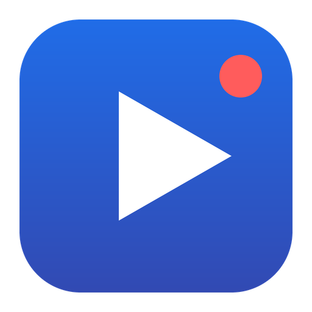

محوّل LREC يحوّل تسجيلات محاضراتك (.lrec) إلى فيديو MP4 مع الدردشة على الشاشة، أو صوت MP3، ويجلب محاضراتك الجديدة وحده.LREC Converter turns your lecture recordings (.lrec) into MP4 video with the chat on screen, or MP3 audio, and fetches your new lectures by itself.
Windows 10 / 11 · نحو 6 ميغابايت · العربية والإنكليزيةWindows 10 / 11 · about 6 MB · Arabic and English

خوارزميات محدّثة تحافظ على كامل إطارات الفيديو وبيانات الصوت والدردشة كما هي.Updated algorithms that keep every video frame, and all the sound and chat, exactly as they are.
رسائل المحاضرة تظهر في وقتها كترجمة في الفيديو، مع نص كامل للدردشة.The lecture's messages appear at their time as subtitles, with a full chat transcript.
تابع مقرراتك، فتصل محاضراتها الجديدة وتتحوّل وحدها، مع إشعار عند جهوزها.Follow your courses: their new lectures arrive and convert by themselves, with a notification when ready.
محاضراتك حسب الفصل والمقرر، مع علامة المشاهدة والمدة.Your lectures by term and course, with watched marks and lengths.
ابحث عن كلمة في دردشات كل محاضراتك وانتقل إلى لحظتها.Find a word in the chats of all your lectures and jump to that moment.
تصلك الإصدارات الجديدة موقّعة، وتثبّتها بضغطة.New versions arrive signed, and install with one click.
للدراسة الشخصية. المحاضرات ملك للجامعة؛ نرجو عدم نشر المحاضرات المحوّلة. TQ Tech جهة مستقلة لا تتبع الجامعة الافتراضية السورية.For personal study. The lectures belong to the university; please don't publish converted lectures. TQ Tech is independent and not affiliated with the Syrian Virtual University.